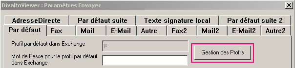
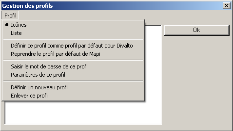
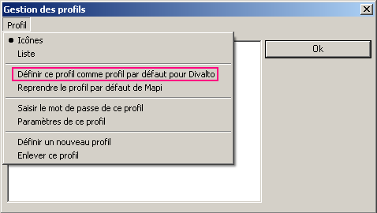
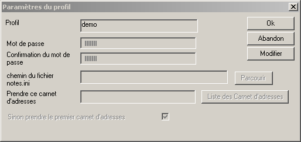
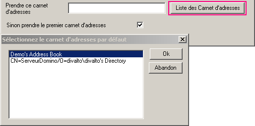

Lotus Notes :
Demande la saisie d’un mot de passe à chaque connexion.
Ne possède pas de gestion de profils à la manière d'Outlook.
DivaltoViewer simule une gestion de profils avec, en particulier, la possibilité de saisir, pour chaque profil, le mot de passe à fournir pour se connecter à Lotus Notes de manière automatique (sans intervention de l'utilisateur). Le choix du profil à utiliser à un instant donné se fait en indiquant un "profil par défaut" parmi les profils créés.
Gestion des profils par DivaltoViewer
Dans DivaltoViewer, sélectionnez le choix Paramètres Envoyer du menu Options puis l'onglet Par Défaut :

Cliquez sur le bouton Gestion des profils pour ouvrir la boîte de dialogue correspondante.

Le menu de la boîte de dialogue "Gestion des profils".
Ce menu permet en particulier :
La création d'un nouveau profil ou la suppression d'un profil existant.
Le paramétrage complet ou simplement la saisie du mot de passe du profil sélectionné.
Le choix du profil par défaut qui sera utilisé pour la connexion à Lotus Notes :

Le choix Paramètres de ce profil ouvre la boîte de dialogue suivante :

On peut ici spécifier (après avoir cliqué sur le bouton Modifier) :
Le mot de passe à utiliser pour se connecter à Lotus Notes.
Si ce mot de passe n'est pas renseigné, Lotus Notes demandera sa saisie à chaque envoi de mail (ou plus généralement à chaque connexion). Remarque : pour se connecter automatiquement à Lotus Notes, Divalto utilise la chaîne de caractères saisie ici après l'avoir encryptée.
Un fichier Notes.ini autre que celui utilisé par défaut. Ce fichier contient tous les paramètres de connexion, avec notamment la ligne KeyFilename=user.id qui identifie l'utilisateur.
Le nom du carnet d'adresses à utiliser pour l'ajout de contacts par Divalto Relation Tiers (sinon, c'est le premier carnet par défaut de l'utilisateur qui sera considéré). Pour sélectionner un carnet d'adresses, cliquez sur le bouton Liste des Carnets d'adresses :

Remarque : Lotus Notes appelé manuellement continue de demander à l’utilisateur de se logger et de saisir son mot de passe.